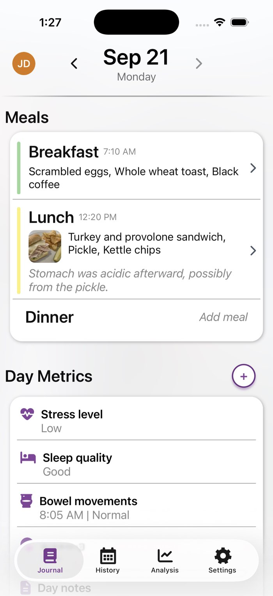
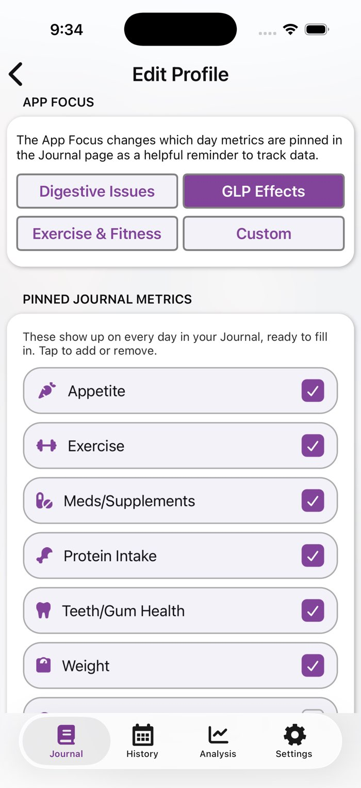

Quick Entry
No need to select food from a list. Type, speak, or snap a photo of whatever you want to track.
Food Diary and Symptom Tracker
Track your meals and symptoms to find food sensitivities and triggers, keep tabs on reactions to GLPs and other medications, and log other daily metrics for a clear picture of your digestive health.





No need to select food from a list. Type, speak, or snap a photo of whatever you want to track.
AI can identify your foods from meal photos, or analyze your entire meal/symptom history to find correlations.
Whether you just want to enter "cheeseburger" or enter every ingredient, it's up to you.
Quickly view past meal info in graphical form to spot food triggers and symptom patterns.
Track other metrics that affect your gut like stress, exercise, medications, appetite, and BMs.
Create a PDF of all your data for your own records or to share with your health professional.
Get reminders to enter your data after each meal, or just once a day.
Gluten-free, dairy-free, IBS, FODMAP, inflammation, keto, fasting…
Track meals, symptoms, medications, and daily factors to spot food sensitivities, reactions to medications, and patterns in your health. Tummy Tamer can help you understand:
Compare food, drinks, medications, stress, cycles, and events with your symptoms.
Track how GLP-1 and other medications may affect your body.
Connect meals and activities with changes in mood, energy, and workouts.
saves you time
are crucial to understanding reactions and trends

show all your data in one place

whether it's digestion, GLP-1s, or fitness


 Chris K
Lead Developer
Chris K
Lead Developer
When I started having stomach issues two years ago, my doctor was quick to prescribe meds and refer me to a gastroenterologist, but I felt like things were moving too fast. I decided to take a step back and start with a simple notebook food diary to track my food and symptoms. I learned a lot about my body through that process, but the record-keeping process was arduous and it was almost impossible to see trends. I searched for an app that allowed simple entry and easy trend analysis but couldn't find anything, so I created Tummy Tamer to help other people. My hope is that you can find the same relief I did that comes from understanding your own body and be able to "tame your tummy!"
Tummy Tamer is free to use. Upgrade to Pro for more features.
| Features | Basic | Pro |
|---|---|---|
| Track food and drink | ||
| Track symptoms | ||
| Track day metrics | ||
| View all history | ||
| AI meal identification | ||
| AI trend analysis | ||
| Multiple profiles | ||
| Export PDF reports | ||
| Multiple device support (cloud sync) | ||
| Add custom day metrics | ||
| Price | Free | $6.99per month longer terms discounted |
"I've already figured something out from your app that has puzzled me a lot previously... too much cream in my morning coffees makes me bloat! Now I know what causes it. Thank you!"

"The color-coded meals provided immediate feedback to help me realize I was sensitive to gluten and sugar. The PDF reports are great, and are exactly what my nutritionist wanted to see."
"This app is extremely helpful for people like me so thank you for creating this app :)"